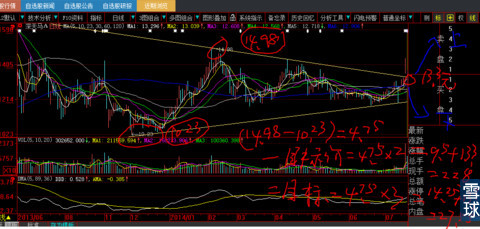
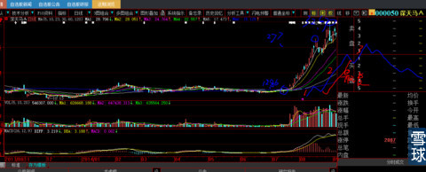
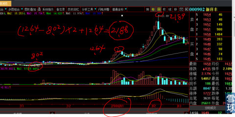
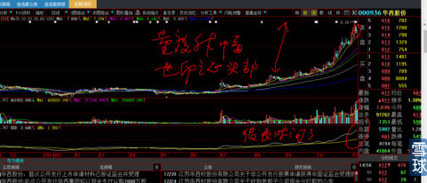

量度升幅达到后，市场的热情不不减，这个时候，大资金其实很少参与，但是股价在稍许调整后，会很快再创新高，是风云再起的更大浪潮还是欲擒故纵、欲进实退？这是所有参与者梦寐以求想掌握的核心技术。
所有的头部都是事后才知道的，但是事实一旦真相大白的摆在你的面前时刻，你账户资金已经面目全非。
如果要提前感知是否头部，就是3个方法，按照顺序优先先后排列：
1、量度升幅是否一个一个台阶分别计算达到？
2、长期均线（30日、60日）是否反压短期均线（5日、10日）？
3、时刻警惕假突破：秘诀是，第一波涨幅小，第二波涨幅最大最长，第二波越长，第三波就越是与第一波基本接近。
4、升幅的大小眼感、波浪是否走完，一而再，再而三、三而竭；
先讲量度升幅达到后的假突破：
下图000050深天马的走势计算：
下图已经在《三角形突破量度升幅计算》中讲解过，记住下面这个图形，把它印在脑海里，这种长期宽幅时空的三角形，爆庄股的准确性几乎100%。正因为我太理解这种图形，从来没有失手过。
股价正好从接近接近三角形2/3处向上突破（如果身在其中向下突破就要止损走人，后期跌幅一样惊人）。量度升幅按照我们的经验是：三角形的顶部14.98元-底边底边最低价10.23元=4.75元，两个量度升幅就是：4.75元*2=9.5元+突破口价格13.3元=22.8元，三个量度升幅就是：4.75元*3=14.25元+突破口价格13.3元=27.55元。

所以，我就在2014年8月15日27.7元处卖掉了。由于均线的角度极其陡峭，后必有假突破（还要大量讲假突破），还有机会出局。

下图是
000902新洋丰（原叫中国服装），底部低价8.02元，短期小鸭头最高价12.64元，目标位=（12.64-8.02）*2+支点12.64=21.88元，结果股价碰了一下21.89元就几乎成了15年的历史大顶。当然，这个也是太巧合，但是当年毕竟是我参与的股票，铭心刻骨。

下图，虽然走势很缓和，结果也差不多。

量度升幅的例子太多太多，历史上数不胜数，本帖将来归类的后续，就用我们未来的实战来补充。
 |
逃命的技术之一：量度升幅后的假突破炒的是心 2015-01-18 12:59:49 |
Copyright © 1996-2014 SINA Corporation All Rights Reserved.